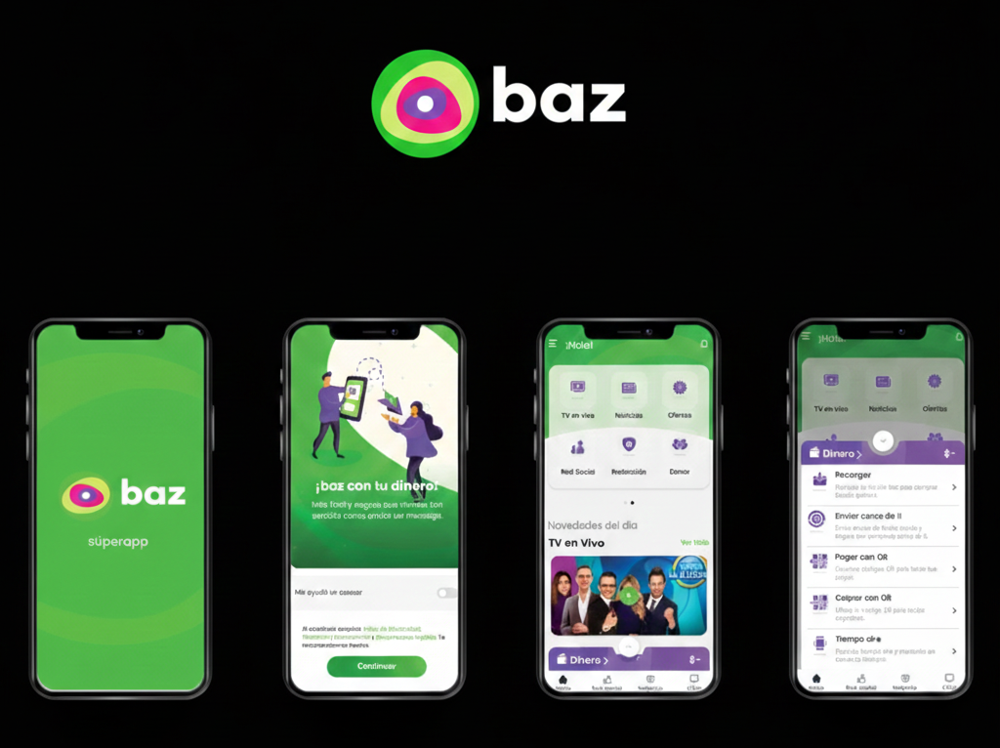

2024
Senior iOS Consultant
Wizeline - BAZ SuperApp
Grupo Salinas • Mexico
Swift
VIPER
Unit Testing
Fintech
E-commerce
Streaming
Contributed to the BAZ SuperApp, a massive all-in-one digital ecosystem transforming banking and lifestyle in Mexico. The app integrates financial services, e-commerce, live entertainment, and business management tools into a single super application, serving millions of users with secure payments, digital wallets, and media streaming.
Key Responsibilities:
- Led the migration of legacy XIB views to programmatic Swift and SwiftUI views
- Migration from GCD to Strict Concurrency
- Mentored junior developers and established code quality standards
- Optimized app launch time by 40%
Super App
Millions of users
Fintech
Banking evolution